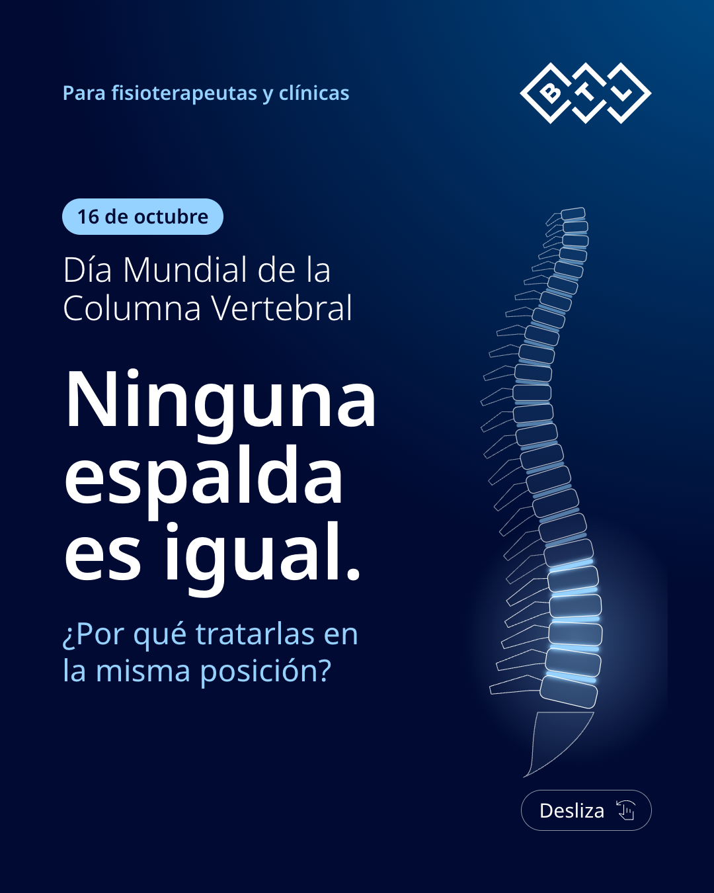
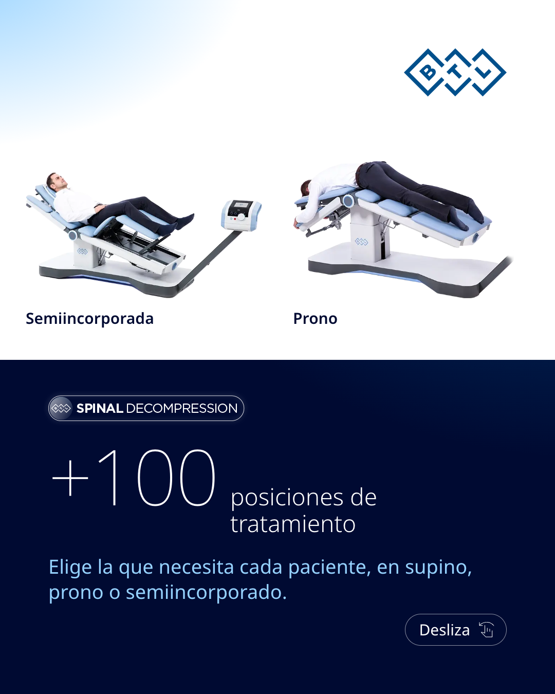
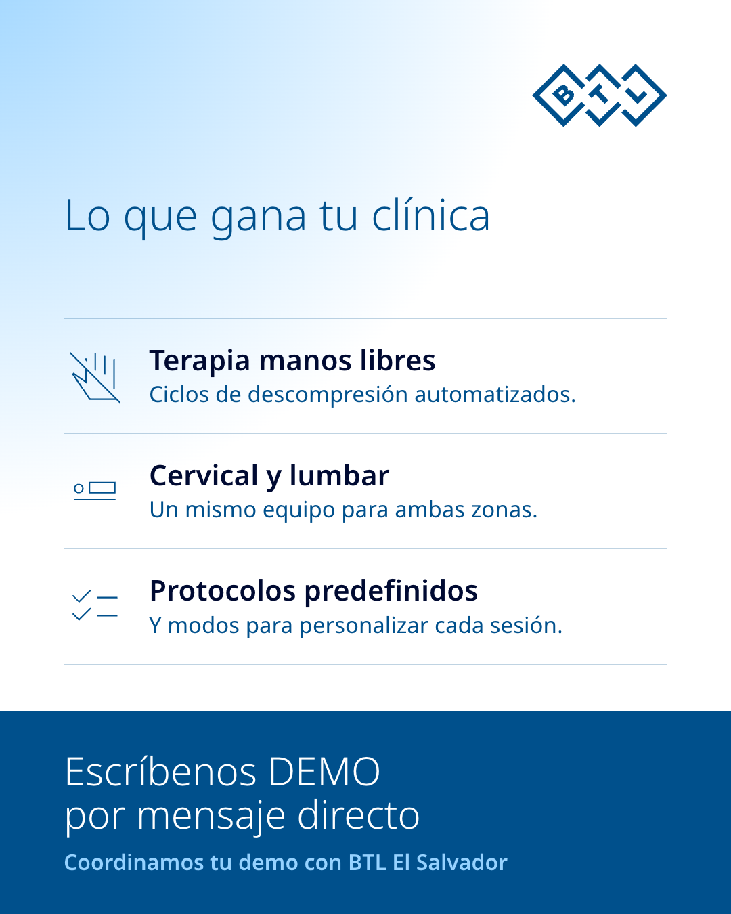

Día Mundial de la Columna Vertebral · Comparativa
BTL El Salvador · BTL Spinal Decompression · 16 de octubre de 2026 · Opción A sin cambios; B y C son alternativas.
Opción A · Actual
Versión aprobada, sin cambios.


Caption (536 caracteres)
Día Mundial de la Columna Vertebral: ninguna espalda es igual, ¿por qué tratarlas en la misma posición? Con BTL Spinal Decompression, descompresión vertebral no invasiva, personalizas cada protocolo con +100 posiciones de tratamiento, trabajas con terapia manos libres en toda la espalda y sumas una nueva línea de servicio a tu clínica. ¿Quieres verlo en acción? Escríbenos "DEMO" por mensaje directo y coordinamos tu demo con BTL El Salvador. #DescompresiónVertebral #Fisioterapia #Rehabilitación #ElSalvador #DíaMundialDeLaColumna
Opción B · Evolución
Evolución de A: mismo gancho y estructura, público explícito, dos posiciones oficiales como prueba visual, ventajas verificadas y un CTA que dice exactamente qué hacer.



Caption (423 caracteres)
Hoy es el Día Mundial de la Columna Vertebral, y en consulta lo sabes mejor que nadie: ninguna espalda es igual. BTL Spinal Decompression te da +100 posiciones de tratamiento, terapia manos libres y descompresión cervical y lumbar en un mismo equipo. ¿Quieres verlo funcionar? Escríbenos DEMO por mensaje directo y coordinamos tu demo con BTL El Salvador. #DíaMundialDeLaColumna #Fisioterapia #Rehabilitación #ElSalvador
Opción C · El segmento
Concepto propio: abre con «L4–L5», un segmento que todo fisioterapeuta reconoce; muestra cómo ajustar la posición al segmento con dos posiciones oficiales y cierra con «DEMO» como acción.


Caption (453 caracteres)
L4–L5. Si trabajas en rehabilitación, lo ves cada semana. Este 16 de octubre, Día Mundial de la Columna Vertebral, te mostramos cómo BTL Spinal Decompression te permite ajustar la posición del paciente al segmento que quieres tratar, con descompresión cervical y lumbar en el mismo equipo. Escríbenos DEMO por mensaje directo y coordinamos una demostración con BTL El Salvador. #DíaMundialDeLaColumna #DescompresiónVertebral #Fisioterapia #ElSalvador
Lámina 1
Lámina 2
Lámina 3
Captions
Opción A
Día Mundial de la Columna Vertebral: ninguna espalda es igual, ¿por qué tratarlas en la misma posición? Con BTL Spinal Decompression, descompresión vertebral no invasiva, personalizas cada protocolo con +100 posiciones de tratamiento, trabajas con terapia manos libres en toda la espalda y sumas una nueva línea de servicio a tu clínica. ¿Quieres verlo en acción? Escríbenos "DEMO" por mensaje directo y coordinamos tu demo con BTL El Salvador. #DescompresiónVertebral #Fisioterapia #Rehabilitación #ElSalvador #DíaMundialDeLaColumna
Opción B
Hoy es el Día Mundial de la Columna Vertebral, y en consulta lo sabes mejor que nadie: ninguna espalda es igual. BTL Spinal Decompression te da +100 posiciones de tratamiento, terapia manos libres y descompresión cervical y lumbar en un mismo equipo. ¿Quieres verlo funcionar? Escríbenos DEMO por mensaje directo y coordinamos tu demo con BTL El Salvador. #DíaMundialDeLaColumna #Fisioterapia #Rehabilitación #ElSalvador
Opción C
L4–L5. Si trabajas en rehabilitación, lo ves cada semana. Este 16 de octubre, Día Mundial de la Columna Vertebral, te mostramos cómo BTL Spinal Decompression te permite ajustar la posición del paciente al segmento que quieres tratar, con descompresión cervical y lumbar en el mismo equipo. Escríbenos DEMO por mensaje directo y coordinamos una demostración con BTL El Salvador. #DíaMundialDeLaColumna #DescompresiónVertebral #Fisioterapia #ElSalvador